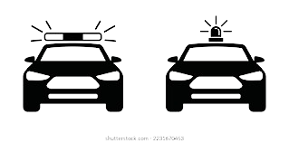

Escucho:
Precisión:


Instrucciones: al escucharse una variedad de sonidos en el entornocomo el sonido de una patrula, ambulancia, grito de peligro,
alarma sismica o el clacson de un camion o automovil se iniciara un video en la imagen correspondiente para llamar la persona del usuario.